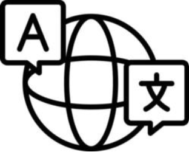
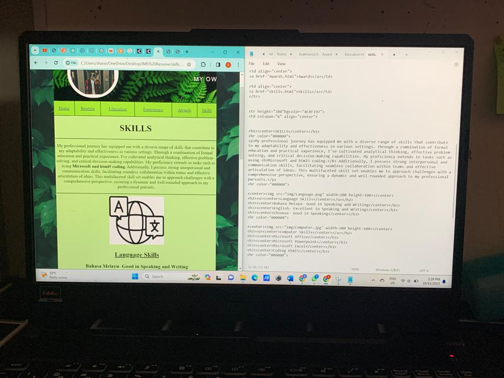

SKILLS
My professional journey has equipped me with a diverse range of skills that contribute to my adaptability and effectiveness in various settings. Through a combination of formal education and practical experience, I've cultivated analytical thinking, effective problem-solving, and critical decision-making capabilities. My proficiency extends to tasks such as using Microsoft and html5 coding. Additionally, I possess strong interpersonal and communication skills, facilitating seamless collaboration within teams and effective articulation of ideas. This multifaceted skill set enables me to approach challenges with a comprehensive perspective, ensuring a dynamic and well-rounded approach to my professional pursuits.

Language Skills
Bahasa Melayu- Good in Speaking and Writing
English- Excellent in Speaking and Writing
Chinese- Good in Speaking
Computer Skills
Microsoft Office
Microsoft Powerpoint
Microsoft Excel
Coding Html5

Other Skills
Multitasking
Teamwork
Conflict Resolution
Willingness to learn
Time management
|